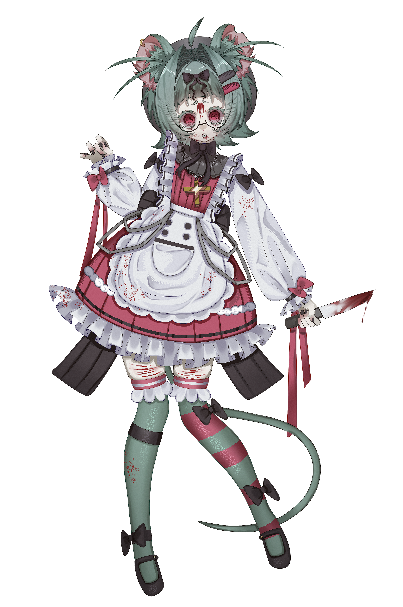
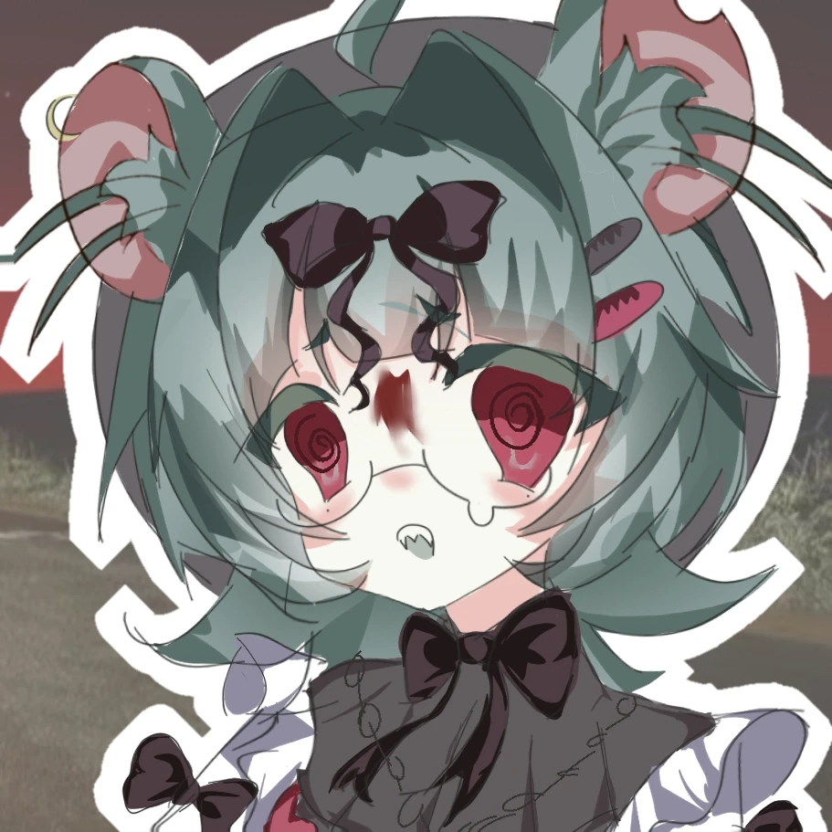
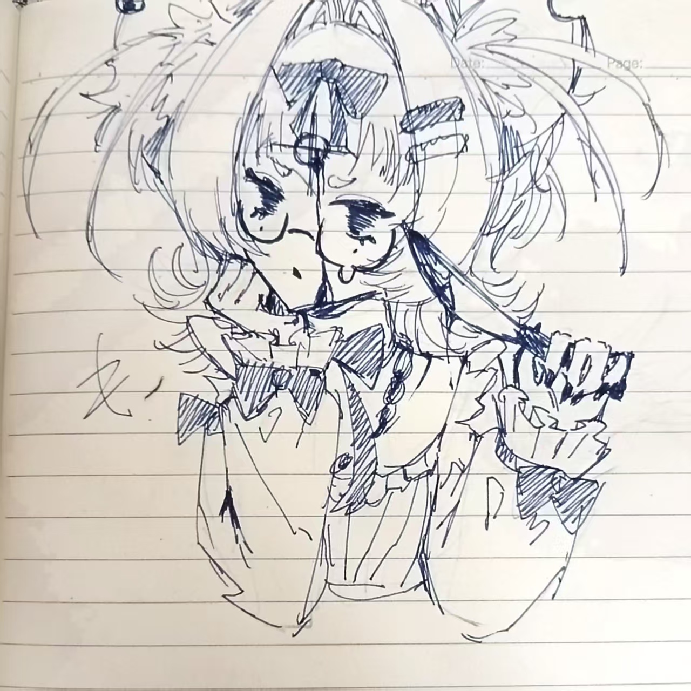
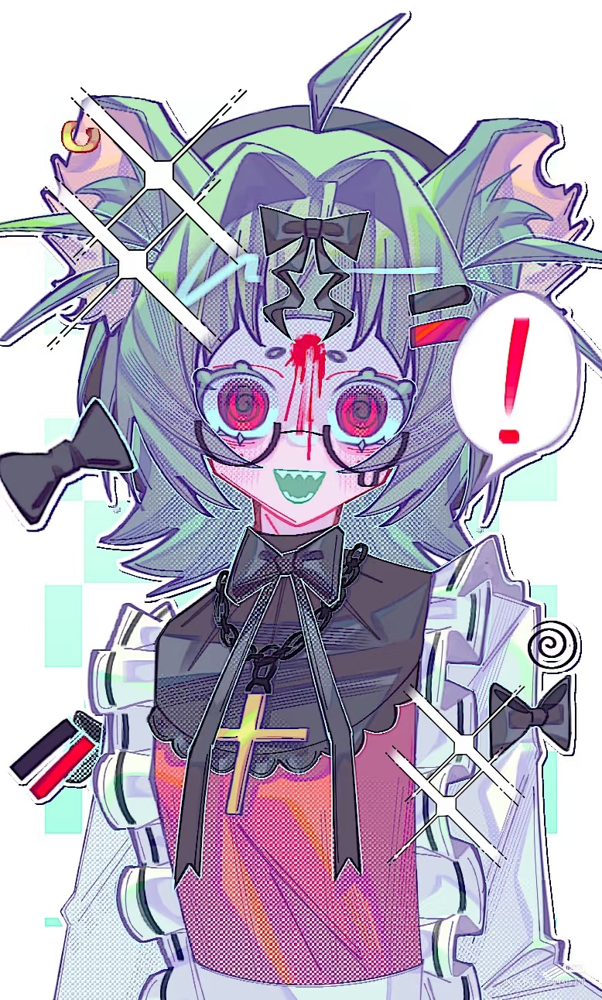
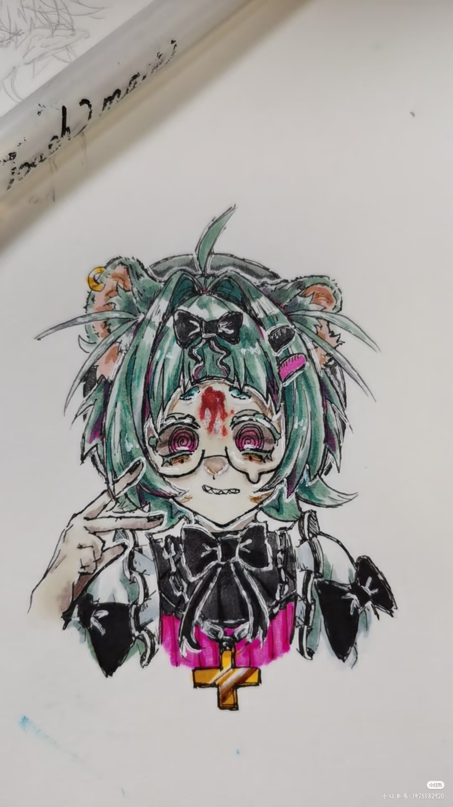

骨ネズミCV
このサイトはUTAU音源「骨ネズミ」の公式紹介ページです。メニューから各項目を閲覧できます。
本网站是UTAU音源「骨鼠」的官方介绍页面，可通过菜单查看各项内容。
骨ネズミ連単
骨ネズミ CVVC

ちゅうごくめい：骨鼠
日本名：骨ネズミ
英名：Bone Mouse
別名：小鼠子、骨ネズミちゃん
性別：女
年齢：16歳（過去の設定であり、現在は不明だがデフォルトで16歳とする）
身長：153cm
誕生日：10月31日
体重：38kg
特徴：二つの涙痣、サメのような歯、リボン、ネズミの特徴
髪色：青緑色
瞳色：濃い赤色
性格：臆病だが表情は豊か
好きなもの：お茶を飲むこと
嫌いなもの：騒がしい機械、太陽光
好物：腐った死体
中文名：骨鼠
日本名：骨ネズミ
英文名：Bone Mouse
别名：小鼠子、骨鼠酱
性别：女
年龄：16岁（过去设定，默认沿用16岁）
身高：153cm
生日：10月31日
体重：38kg
特征：两颗泪痣、鲨鱼齿、蝴蝶结、老鼠特征
发色：青绿色
瞳色：深红色
性格：胆小但表情丰富
喜好：喝茶
厌恶：嘈杂机械、阳光
喜好食物：腐烂尸体
骨ネズミ-連単-
骨ネズミ-CVVC-
未完成です......



